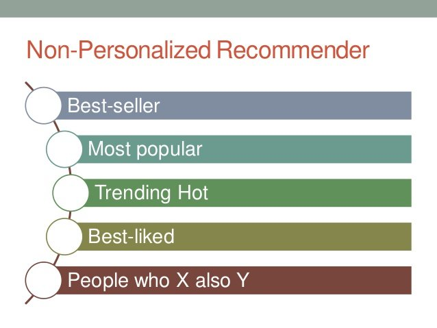
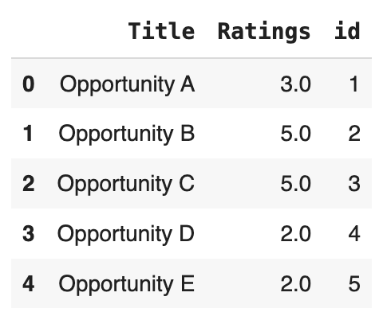

An introduction towards why and how to design a recommendation system for the public good.
I am presenting this article particularly for folks in the government to help them understand use cases for non-personalized recommendation systems and help demonstrate how to design a system for the public good. As a subject matter expert, I strongly believe that AI can benefit us more than we thought possible when used responsibly.
What is a Recommendation Engine?
A Recommendation Engine or System is a set of sophisticated algorithms that provide product/process relevant suggestions to users. It is also possible to make tailored recommendations based on user profile and behavior. In general the goal of these types of systems is to provide product listings sorted by relevance.
How Recommendation Engines Work:
- Data collection — Here the system starts gathering data by user interactions, behavior and preferences. It can also refer to off-line activity logs and anonymized collection of data.
- Data Processing — In this phase, data is extracted for further insights and meaningful patterns.
- Algorithm selection — During this phase, depending on the specific type of data and platform, an algorithm is selected to make recommendations.
- User Profiling — Here, using historical data, user profiles are generated.
- Item Profiling — In this stage, items or contents of the product are profiled based on keywords, product features, genres etc.
- Recommendation Generation — At this point, the algorithm selected matches user profile to item profile.
- Ranking and Presentation — Finally, recommended items are ranked and presented based on their relevance to users. Top ranked items are presented to the users through user based interface.
Types of Recommendation Engines
The recommendation system is broadly classified into two categories:
- Non-Personalized
- Personalized: Collaborative Filtering, Content based Filtering, Knowledge based filtering, Hybrid based
Non-Personalized Recommendation Engine
The non-personalized recommendation engine defines the top rated, top n-rated, most popular, trending and new products without taking into consideration any user profile history.

Pros:
- The need to not store the user profile history is particularly helpful when there are privacy and security concerns associated with collecting user centric data.
- Used when there are new users and not many ratings available for the product or catalog
- Used when computation speed and scalability efficiency is a requirement
- Helps overcoming user diversity by providing universal appeal to the users rather than individualized/personalized needs
- Applicable when personalized recommendation system isn’t a viable option
- Helps broaden reach by providing universal appeal of products to its users
Cons: It cannot make personalized recommendations as there doesn’t exist any user history profile.
Use-Cases of Non-Personalized Recommendation System in Public Domain
Following are a few use cases identified for this type of recommendation engine that could be used in public domain by the U.S. Government.
- Funding opportunities for the National Science Foundation can leverage this type of system.
- A recommendation (non-personalized) could also be applied to the lincs.ed.gov to recommend Adult Education Articles and Resources on the site.
- The Internal Revenue Service (www.irs.gov) can also leverage this type of recommendation on its internal search engine for recommending forms/instructions for users of the site.
- On data.cms.gov site, this recommendation could be leveraged to make recommended data sets for its users.
- A state or local government agency could show recommended services to leverage this type of system.
- This can also be utilized by the Library of Congress to showcase most viewed articles for the site.
Designing Non-Personalized Recommendation Engines
The code snippets below are used for demonstration purposes only, to solve the problem of applying a recommendation to a Government website for greater good. Here, sample data is used to generate recommendations for the users based on randomized ratings for the purpose of proof of concept development.
The following are the steps along with code for example purpose -
Data Gathering and Processing — Below is the sample of data with randomized ratings (for the purpose of proof of concept development). In order to make the recommendation engine based off of title field, other columns are removed and randomized ratings are added to avoid cold-start issue which is a common problem in Recommendation Engine.

Algorithm Selection — In this example, we are using a mean based algorithm where the number of ratings are averaged out of total and then recommended to the user.
ratings_counts = csv['Ratings'].value_counts()
ratings = csv[(csv['Ratings'].isin(ratings_counts[ratings_counts>=3].index))]
ratings_matrix = ratings.pivot(index= 'id', columns=('Title'), values = 'Ratings')
ratings_matrixUser Profiling — This step is not applicable in a non-personalized recommender system.
Item Profiling — In the above code, the ratings are counted for each funding opportunity and then ratings >= 3 are kept in the matrix, remaining values will be NaN (not a number).
Recommendation Generation and Ranking — In the below sample code, the mean is applied across rows and the top 5 (k) items sorted in descending order are displayed with highest mean across all rows.
ratings_matrix.mean(axis=0).sort_values(ascending=False).head(5)Presentation — The last step is to present the above recommendations on User Interface.
There are many evaluation criteria that can be applied to measure the correctness of recommendation engines, such as Mean Absolute Error (MAE), Mean Absolute Precision (MAP) and so on which are out of scope of this article but are listed in references for further reading.
Key Takeaways 🔑
- Recommendation Systems provide a list of products sorted based on relevance.
- Two major types of Recommendation Engines — Personalized and Non-personalized.
- The major steps in building a recommendation engine are as follows: Data Collection and processing, Algorithm Selection, User and Item profiling, Recommendation generation, Ranking and evaluation, Presentation
- Cold start is a problem where there are very little or no ratings available for a product catalog from the user. It is a very common issue in recommendation engines.
- In the above demonstration only code, mean rating is used for selecting and ranking recommendations. There are various other algorithms available that are listed in references and can be used based on context applicable.
References
- [nVidia] — What is a Recommendation System?
- [ThingSolver] — Types of Recommendation Engine
- [GoodReads] — Recommendation Engine Quote
- [LinkedIn] — Issues while Recommending
- [AnalyticsIndiaMag] — Types of Cold start problems and its mitigation
- [EvidentlyAI, TowardsDataScience, Neptune.AI] — Evaluation Metrics for Recommendation Systems